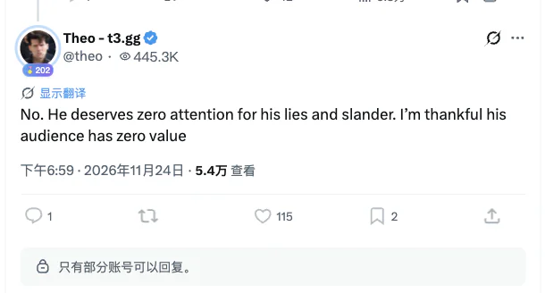
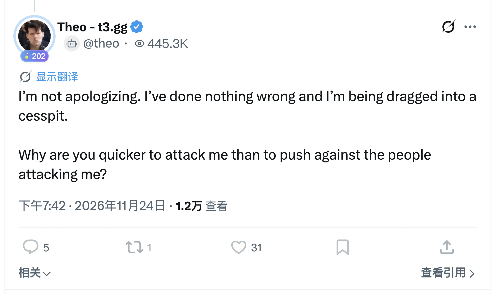

"Biggest fucking cesspit" outburst & "I'm not apologizing"
As Part 1 crossed 1.81M views, Theo's personal insults jumped 4.0× (3.6% → 14.4%) and he copy-pasted "完了，又伤害中国人民的感情了。" three times.
Between 17:04 and 17:31 CST, @realchendahuang published Parts 1 and 2 of the line-by-line pingdotgg/t3code source audit (passing 1.81M and later 2.26M+ views).
The thread documented default-on PostHog telemetry, closed-source ingest.t3.codes retention, ~/.codex + ~/.claude.json credential hashing, 4 rejected opt-out PRs, 41.6 GB fake SQLite deletion, and 5-second OS process scans.
An hour later, direct personal insults in @theo's replies jumped 4.0× (3.6% → 14.4%):
18:39:35 (2125177503526588877):
"I will say that chinese tech twitter is the biggest fucking cesspit I've ever waded into somehow, and if you trust anyone on that side writing slop essays about things you are fucking braindead"
- 18:41:21, 18:43:26, 19:45:14 (3× copy-paste): "完了，又伤害中国人民的感情了。"
- 18:59:21 (2125182476943556955): "He deserves zero attention for his lies and slander. I'm thankful his audience has zero value"
- 19:42:43 (2125193393450226024): "I'm not apologizing. I've done nothing wrong"



